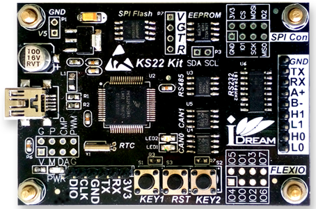

官方的Flasher PRO支持以太网、串口等众多功能，功能强悍的同时价格也贵的相当。在“xiaohewanwan”大神的帮助下，设计了这个简易的Flasher PRO.具有功能如下：
1. 独立的JLink，支持JTAG/SWD接口，Download speed up to 1 MByte/S！
2. 128MB NandFlash用于存储配置和数据文件。
3. 通过JFlash工具，将配置文件及烧写目标芯片Download到Flasher中。
4. 使用充电宝、3节5号电池等供电，按下按键即可对目标芯片离线烧写。
5. 对外电压输出：通过跳线可选择输出3.3V或者5V，同时增加LED指示对外供电状态。
Support：Any ARM7/9/11,Cortex-A5/A8/A9,Cortex-M0/M1/M3/M4/M7 ，额...好吧，几乎ARM全系!!另支持RX（瑞萨）、Power PC Core！
Flasher PRO supports a wide range of cores/devices. For a complete list, please click Here !.
-- JFlash对目标芯片的配置 --
1. 安装Segger驱动“JLink_Windows_V610e.exe”，之后插入iFlasher，打开J-Link Commander可以识别J-Link PRO / Flasher PRO V4：
对外电压输出控制：在J-Link Commander下输入：
power on ：Switch target power on。（对外供电使能）
power off ：Switch target power off。（禁止对外供电）
power on perm ：Set target power supply default to "on"。（默认使能对外供电）
power off perm ：Set target power supply default to "on"。（默认禁止对外供电）